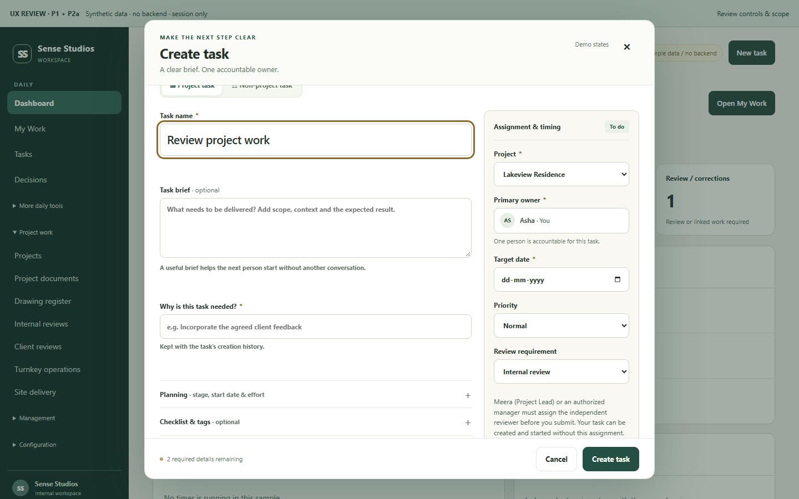
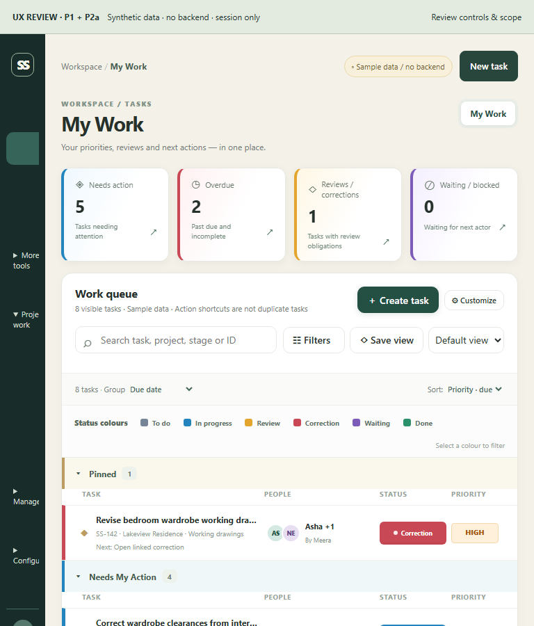
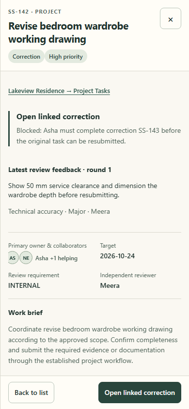
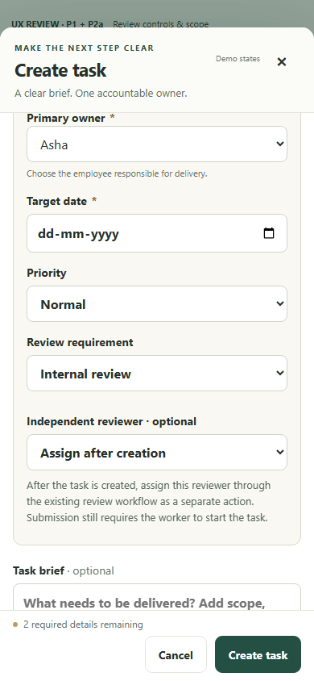

Sense P1/P2a refinement comparisonSense · P1/P2a refinement
Before/after evidence from the existing review artifact. No production implementation, backend, permissions or staging changes. Synthetic data only.
Open working prototype · Review report · Playwright results
1440px · manager review setup
1440px · employee review setup
Before — preserved baselineAfter — refinement candidate
1024px · manager review setup
1024px · employee review setup
768px · my work
Before — preserved baselineAfter — refinement candidate
768px · manager review setup
768px · employee review setup
390px · dashboard
Before — preserved baseline After — refinement candidate
After — refinement candidate
390px · review
Before — preserved baseline After — refinement candidate
After — refinement candidate
390px · manager review setup
Before — preserved baselineAfter — refinement candidate
390px · employee review setup
320px · dashboard
Before — preserved baseline After — refinement candidate
After — refinement candidate 320px · my work
Before — preserved baselineAfter — refinement candidate 320px · creation
Before — preserved baselineAfter — refinement candidate 320px · review
Before — preserved baselineAfter — refinement candidate 320px · project tasks
Before — preserved baselineAfter — refinement candidate 320px · manager review setup
Before — preserved baselineAfter — refinement candidate 320px · employee review setup
Before — preserved baselineAfter — refinement candidate